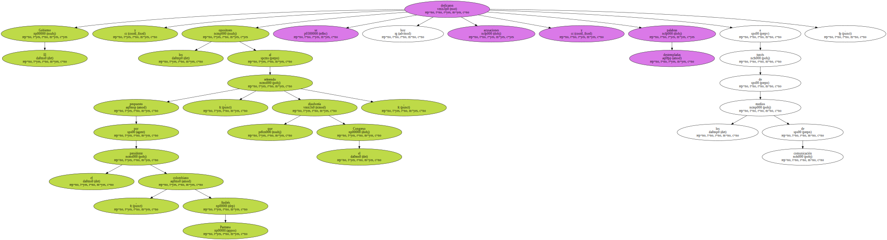
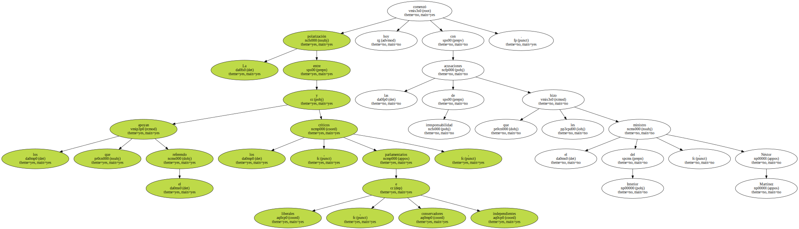
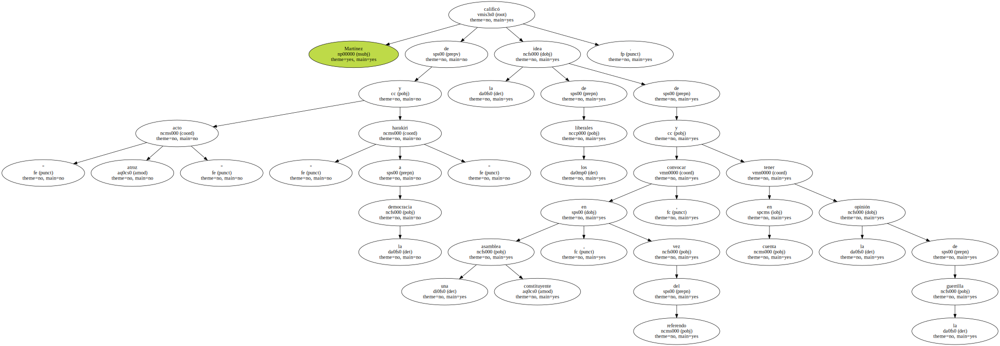
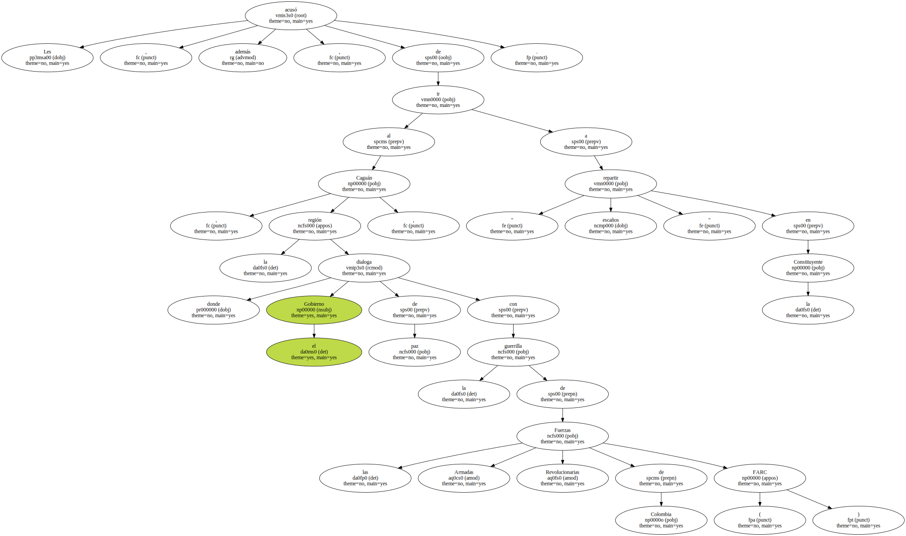
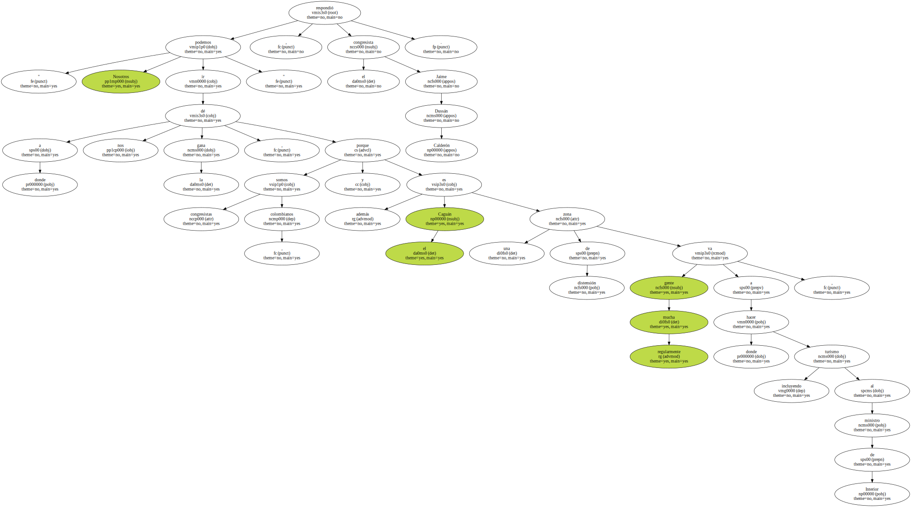
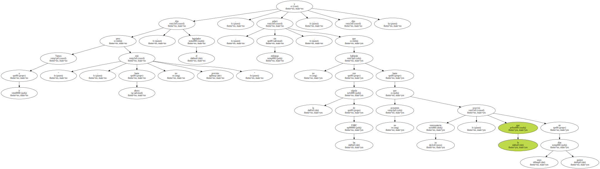
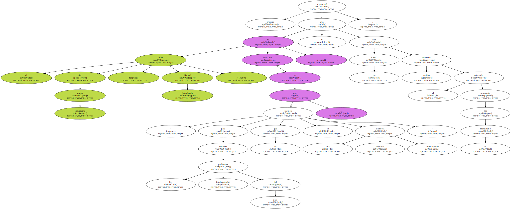
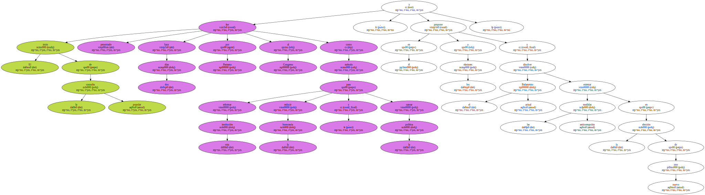
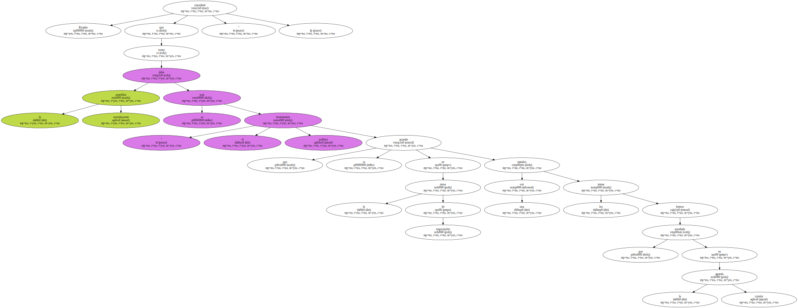
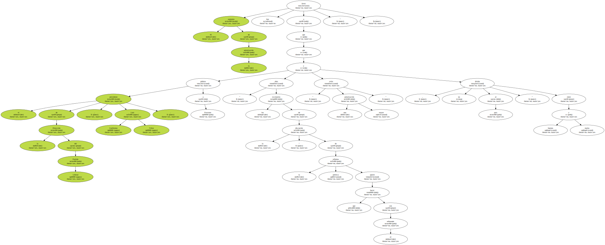

El Gobierno y los opositores al referendo propuesto por el presidente colombiano , Andrés Pastrana , que disolvería el Congreso , se dedicaron hoy acusaciones y palabras destempladas a través de los medios de comunicación.
La polarización entre los que apoyan el referendo y los críticos , parlamentarios liberales , conservadores e independientes , comenzó hoy con las acusaciones de irresponsabilidad que les hizo el ministro del Interior , Néstor Martínez.
Martínez calificó de " acto atroz " y " harakiri a la democracia " la idea de los liberales de convocar una asamblea constituyente , en vez del referendo , y tener en cuenta la opinión de la guerrilla.
" Esa sería una constituyente armada " , aseguró el ministro , quien dijo a la prensa que no se puede dar cabida a los actores armados en las reformas políticas antes de que estos entreguen las armas.
Les acusó , además , de ir al Caguán , la región donde el Gobierno dialoga de paz con la guerrilla de las Fuerzas Armadas Revolucionarias de Colombia ( FARC ) , a " repartir escaños " en la Constituyente.
" Nosotros podemos ir a donde nos dé la gana , porque somos congresistas , colombianos y además el Caguán es una zona de distensión donde regularmente mucha gente va a hacer turismo , incluyendo al ministro de Interior " , respondió el congresista Jaime Dussán Calderón.
" Vamos a ir , pero hasta ahora no está previsto " , dijo el legislador , y aclaró , sin embargo , que no hablarán con la cúpula de las FARC hasta que no presenten su convocatoria , lo que ocurrirá en unos quince días , dijo.
Dussán argumentó que el líder del grupo insurgente , Manuel Marulanda , ha insistido en que " para resolver los problemas fundamentales del país lo que se requiere es una asamblea nacional constituyente " , y las FARC también han rechazado el referendo propuesto por el mandatario.
El texto de la consulta popular fue presentado hace dos días por Pastrana al Congreso como método para reformar esta institución , reducir la burocracia y sanear la política , y en él propone a los electores disolver el actual Parlamento y estrenar las medidas anticorrupción en la elección de uno nuevo.
Por su parte , el alto comisionado para la Paz , Víctor Ricardo , consideró que las intenciones de estos congresistas de realizar consultas con las FARC es " un acto de irresponsabilidad ".

Ricardo consideró que la asamblea constituyente se debe usar como " el instrumento político que se acuerde en la mesa de negociación una vez tratados los temas que hemos acordado en la agenda común ".
El aumento de la polarización llevó hoy a que el presidente de la Dirección del Partido Liberal , Luis Guillermo Vélez , pidiera a Pastrana que " abra los escenarios de la discusión " de la reforma política que quiere hacer con el referendo , " evite una mayor polarización " y no divida al país " entre buenos y malos ".
